도시의 침수를 판단하고, 가려진 잡초 줄기를 추론하며, 카메라 관측을 로봇 행동으로 바꾸는 일.
Cosmos 3의 세 가지 현장 사례는 물리 AI의 성능이 어디에서 만들어지고, 어떻게 배포 가능한 속도로 압축되는지를 보여준다.
NVIDIA Developer 세션 분석2026년 8월 20일읽는 시간 약 18분연구자료Physical AI
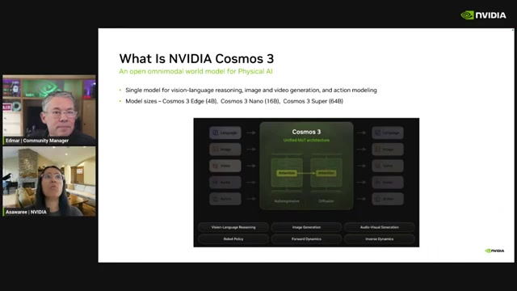
00:05:50하나의 모델, 여러 물리 AI 경로.
Cosmos 3는 언어·이미지·비디오·행동을 입력과 출력으로 연결하며,
Edge 4B·Nano 16B·Super 64B 구성을 제시한다.
01 · Abstract
도메인 전문화와 배포 최적화를 분리하라
이 보고서는 NVIDIA Developer의 80분 세션
“Cosmos 3 Post-Training in Action With Aigen and Linker Vision”을 바탕으로,
Cosmos 3의 사후학습 전략을 네 개의 층으로 분석한다.
첫째, Linker Vision은 범용 객체 검출을 침수·통행 방해·차량 양보 같은 운영 판단으로 바꾼다.
둘째, Aigen은 사람이 볼 수 없는 식물의 3D 위치와 픽셀 정답을 시뮬레이션으로 만든다.
셋째, DROID 정책은 언어와 다중 카메라 영상에서 미래 비디오와 행동을 함께 예측한다.
넷째, 분포 정합 증류는 도메인 특화가 끝난 생성 모델을 50단계에서 4단계 추론으로 압축한다.
사례를 관통하는 결론은 단순하다. 물리 AI의 현장 성능은 기반 모델 하나로 완성되지 않는다.
운영 정의, 데이터 구성, 평가 프로토콜, 시뮬레이션, 정책 목적함수와 배포 최적화가
순서대로 맞물릴 때 비로소 하나의 시스템이 된다.
한 문장 요약
Cosmos 3는 범용 추론기와 생성기를 공통 기반으로 제공하지만,
실제 가치는 각 도메인의 정답을 설계하고 특화한 뒤 별도의 증류 단계로 배포 비용을 낮출 때 만들어진다.
02 · Key findings
네 가지 핵심 발견
세 사례는 서로 다른 산업을 다루지만, 데이터에서 행동까지 이어지는 설계 원리는 놀랄 만큼 닮아 있다.
FINDING 01
문제 정의가 모델 선택보다 먼저다
‘물이 보이는가’와 ‘통행을 방해하는 침수가 시작됐는가’는 다른 문제다.
사후학습은 현장의 운영 정의를 모델의 출력 정의로 번역하는 과정이다.
FINDING 02
희귀 사건은 평가 설계가 좌우한다
높은 재현율의 1차 필터, 정밀한 2차 추론, 클래스 균형,
재표현 질문과 단계형 레이블이 드문 양성 사례의 안정성을 높인다.
FINDING 03
합성 데이터는 관측 불가능한 정답을 만든다
가려진 줄기의 위치, 깊이, 점군, 픽셀 단위 식생처럼 사람이 직접 표시하기 어려운 신호는
절차적 시뮬레이션에서 더 정확하게 얻을 수 있다.
FINDING 04
특화가 끝난 뒤 가속한다
도메인 SFT로 정확도를 먼저 확보한 다음 few-step 증류를 적용하면
품질 문제와 지연시간 문제를 분리해 진단할 수 있다.
사례별 사후학습 목표와 배포 가치
사례
현장 문제
사후학습 대상
핵심 데이터
배포 가치
Linker Vision
도시 사건의 맥락과 조치 판단
Reasoner alignment / VLM SFT
실제 영상, 사건 주석, 합성 희귀 사례
단순 검출을 운영 판단으로 전환
Aigen
가려진 식물 구조와 잡초 제거 위치
Vision SFT / 월드 모델
현장 영상, 절차적 식물, 정밀 시뮬레이션 정답
사람이 만들 수 없는 라벨 확보
DROID Policy
언어 지시와 관측을 로봇 행동으로 변환
Action policy post-training
다중 카메라 영상, 언어, 행동 청크
미래 예측과 제어를 하나의 정책으로 통합
분포 정합 증류
생성 모델의 높은 추론 지연시간
도메인 전문 교사 → few-step 학생
교사·학생의 출력 분포와 score 예측
100회 평가를 4회로 축소하는 이론상 25배 가속
03 · Foundation
Reasoner와 generator가 공유하는 하나의 기반
Cosmos 3의 공통점은 언어 지시를 해석하는 추론기와 관측·미래·행동을 생성하는 생성기를
분리하면서도 하나의 토큰 공간과 어텐션 구조 안에서 연결한다는 데 있다.
Reasoner
언어 지시와 시각적 맥락 해석
물리적 타당성과 운영 기준 판단
질문에 대한 설명과 분류 생성
↔
Generator
이미지·비디오와 미래 상태 생성
행동 토큰 및 행동 청크 예측
동역학 표현과 시뮬레이션 보완
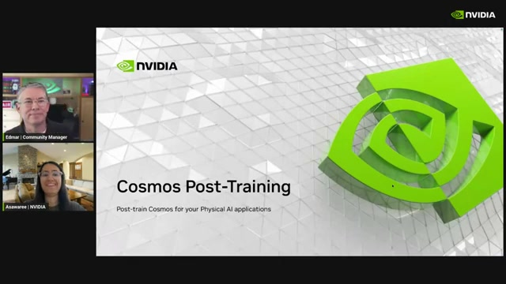
00:04:55
도메인 데이터 준비부터 평가·배포, 정책 학습과 생성 가속까지 세션 전체 범위를 제시한다.
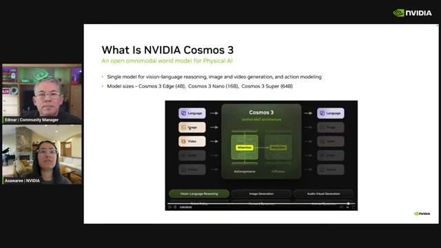
00:06:35
언어·이미지·비디오 토큰을 공유하고 autoregressive와 diffusion 생성을 결합한다.
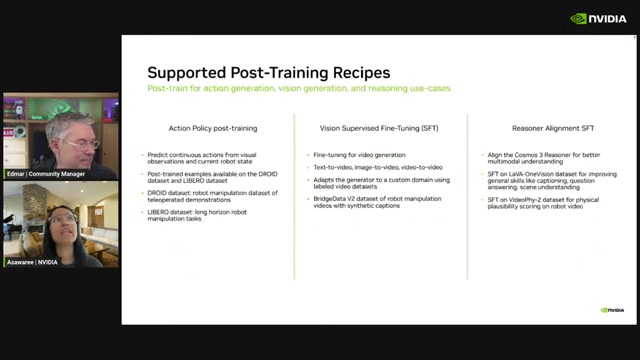
00:10:02
행동 정책, 비전 SFT, 추론 정렬이라는 세 가지 사후학습 레시피가 제시된다.
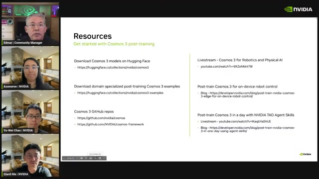
01:16:10
모델·체크포인트·학습 및 추론 코드와 검증용 레시피가 후속 자원으로 안내된다.
04 · Evidence I
도시 영상: 검출을 넘어 운영 판단으로
Linker Vision의 문제는 카메라 속 객체를 찾는 것이 아니다.
도시가 실제로 대응해야 하는 사건인지, 통행이 가능한지, 어떤 조치가 필요한지를 설명하는 것이다.
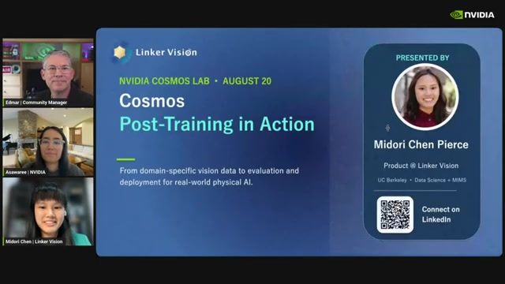
00:13:08상황 이해를 운영으로 연결한다.
Linker Vision은 실시간 카메라 영상을 도시와 산업 인프라의 대응 판단으로 전환하는 문제를 제시한다.
하나의 VLM이 112개 시나리오를 다루려면
발표 자료에 따르면 Linker Vision의 AI Nexa 플랫폼은 10개가 넘는 주요 도메인,
300개가 넘는 시나리오와 5만 개 이상의 스트림을 다룬다.
이 가운데 9개 도시 기능에 걸친 112개 운영 시나리오를 하나의 공유 VLM으로 처리하는 것이 목표다.
교통이 가장 큰 비중을 차지하고 대중교통·항만·수자원·공공사업이 뒤를 잇는다.
50K+운영 스트림
4M비디오 시간
112핵심 운영 시나리오
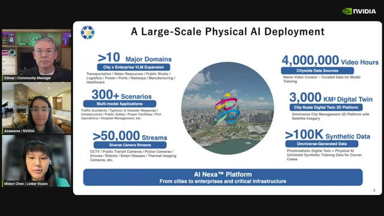
00:13:33
플랫폼 규모는 발표 자료에 표시된 Linker Vision의 자체 주장이다.
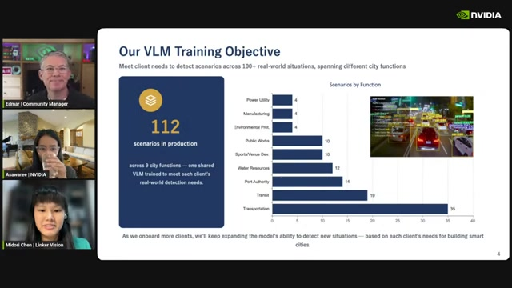
00:13:55
고객과 도시가 늘어날수록 동일 기반 모델이 처리할 운영 정의도 함께 늘어난다.
객체가 있다는 사실은 출발점일 뿐이다. 현장은 그 객체가 지금 무엇을 방해하고, 누가 어떻게 대응해야 하는지를 묻는다.
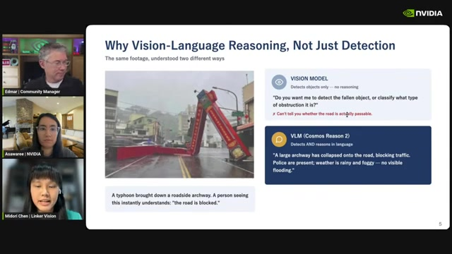
00:14:23검출과 판단의 차이.
쓰러진 구조물을 찾는 데서 멈추지 않고 도로 차단 여부, 침수, 경찰의 존재와 같은 운영 맥락을 판단한다.
Sense–Simulate–Train–Deploy–Act
시스템은 기존 카메라로 사건을 감지하고, 디지털 트윈에서 희귀 사건을 합성하며,
실데이터와 합성데이터로 학습한 뒤 현장 경보와 인력 배치로 연결된다.
이 흐름의 실무적 핵심은 “Recall First, Precision Second”라는 2단계 스크리닝이다.
01 · SENSE기존 카메라에서 후보 사건 감지
02 · SIMULATE디지털 트윈으로 희귀 상황 생성
03 · TRAIN실제·합성 데이터를 함께 학습
04 · DEPLOY현장 스트림에 모델 배포
05 · ACT경보·인력·대응 조치로 연결
1차 모델은 놓치지 않는 데 집중하고, 2차 VLM은 좁혀진 후보의 정밀 판단을 맡는다.
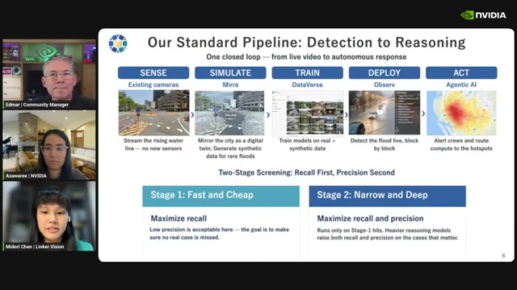
00:15:02
저비용 1차 모델로 후보를 넓게 잡고 무거운 추론 모델을 선택적으로 적용해
계산 비용과 오탐 감소를 동시에 관리한다.
성능은 데이터와 평가 파이프라인에서 만들어진다
Cosmos-Reason2-8B 학습 흐름은 원시 데이터와 주석에서 시작해 클래스 균형,
학습·검증 분할, 오탐 벤치마크, 추론 지표와 릴리스까지 이어진다.
특히 도시 사건처럼 양성이 희귀한 문제에서는 단순 정확도보다
답변 분포와 오탐 평가 방식이 결과를 크게 좌우한다.
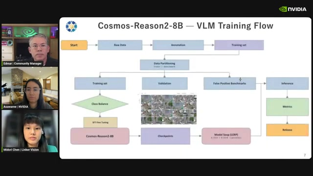
00:16:21
데이터 품질, 클래스 균형, 검증 세트와 오탐 벤치마크가
SFT·LoRA 체크포인트 학습과 같은 비중으로 다뤄진다.
‘침수’라는 단어를 현장의 기준으로 다시 정의하기
범용 모델은 도로에 물이 많이 보이면 침수라고 답할 수 있다.
그러나 도시 운영에서 필요한 신호는 도로 가장자리의 물이 차오르고
통행을 방해하기 시작하는 초기 징후다.
이 차이를 학습한 사례에서 발표 슬라이드는 정확도가 0.64에서 0.98로 향상됐다고 보고한다.
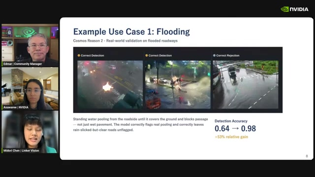
00:17:34발표 자료 자체 보고: 정확도 0.64 → 0.98, 상대 향상 +53%.
이는 독립 검증 수치가 아니라 세션에서 제시된 사례 결과다.
시간을 읽어야 답할 수 있는 질문
차량이 보행자에게 양보했는지는 한 프레임에서 판단할 수 없다.
차량과 보행자의 방향, 거리, 속도와 타이밍이 여러 프레임에 걸쳐 어떻게 변하는지 봐야 한다.
발표 자료의 최상 결과는 정확도 0.86, F1 0.87로 표시됐다.
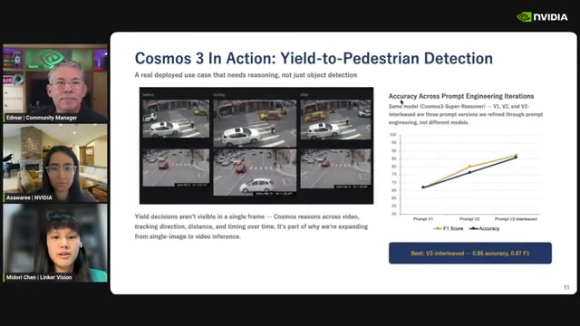
00:19:20
객체 존재가 아닌 관계의 시간적 변화를 읽는 비디오 추론 사례.
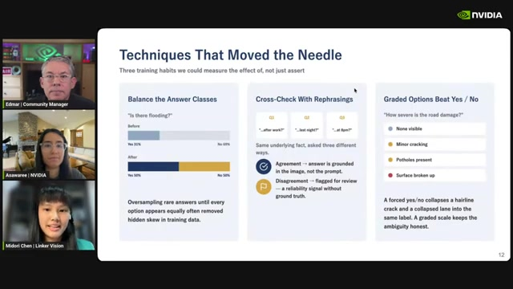
00:20:34
답변 균형, 질문 재표현, 심각도 등급이 모델의 안정성을 높였다.
기법 01
답변 클래스 균형: 희귀한 답을 오버샘플링해 다수 클래스 편향을 줄인다.
기법 02
재표현 교차검증: 같은 사실을 여러 방식으로 질문하고 답변 불일치를 검토 신호로 사용한다.
기법 03
단계형 레이블: 예·아니오의 경계 사례를 심각도나 진행 단계로 바꿔 운영 판단에 맞춘다.
Case takeaway
도시 VLM의 차별점은 더 많은 객체를 찾는 데 있지 않다.
사건의 운영 정의를 명시하고, 희귀 양성을 놓치지 않는 파이프라인과
시간적 판단을 함께 설계하는 데 있다.
05 · Evidence II
농업 로봇: 사람이 볼 수 없는 정답을 합성한다
Aigen의 태양광 자율 제초 로봇은 작물과 잡초를 구분하는 데서 끝나지 않는다.
날이 작물을 피하면서 잡초의 줄기 부근을 정확히 타격하려면,
잎 아래 가려진 3차원 위치까지 알아야 한다.
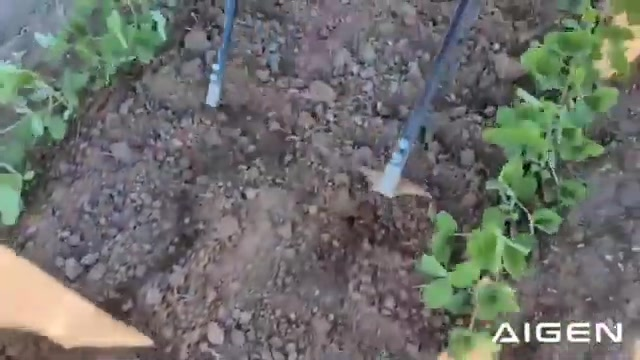
00:28:30현장에서 작동하는 엣지 AI.
태양광으로 구동되는 로봇이 작물과 잡초를 구분하고 2자유도 팔 끝의 날로 잡초를 기계적으로 제거한다.
라벨러가 보지 못하는 것을 어떻게 학습할까
식물이 조밀하게 겹치면 사람도 개체의 경계와 줄기가 땅에서 나오는 위치를 볼 수 없다.
그러나 로봇의 행동에는 바로 그 가려진 위치가 필요하다.
실제 영상이 많다는 사실만으로는 부족하다.
관측 불가능한 정답이 필요한 순간, 수작업 주석은 구조적인 한계에 부딪힌다.
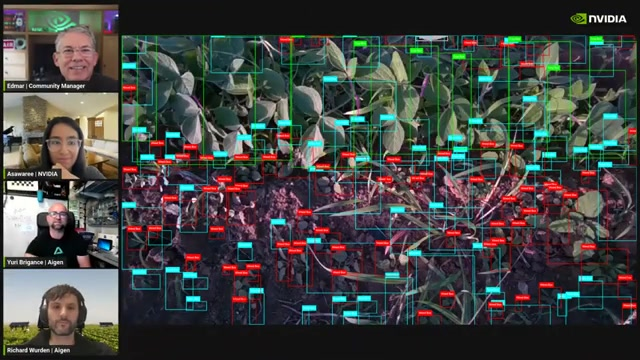
00:30:05
잎이 겹치면 개체 경계와 줄기의 기점이 가려져 행동 학습용 정답을 만들기 어렵다.
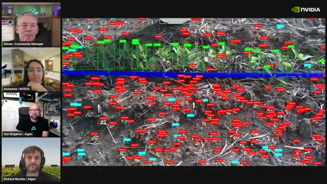
00:32:54
작물 종과 성장 단계가 비슷할수록 주석 교육·검수·수정 비용이 급증한다.
합성 데이터의 가장 큰 장점은 ‘더 많은 이미지’가 아니라, 현실에서는 관측할 수 없는 정답 채널을 정확히 제공한다는 것이다.
절차적 세계가 제공하는 정밀 정답
Aigen의 시뮬레이션은 식물마다 다른 3D 형상을 만들고 발아부터 수확기까지 성장시킨다.
이 세계에서는 RGB 영상뿐 아니라 세그멘테이션, 깊이, 라이다 점군,
잎 단위 영역과 가려진 줄기의 3D 위치를 동시에 출력할 수 있다.
발표자는 약 48개의 H100 GPU 클러스터에서 1주 미만의 학습 실행 경험을 언급했지만,
이는 일반화된 벤치마크가 아니라 발표자의 자체 경험치다.
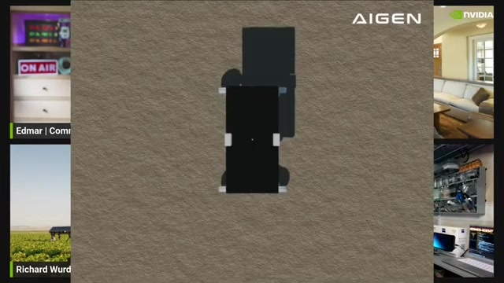
00:36:36
절차적 식물과 환경은 성장 단계·배치·형상을 통제하면서
세그멘테이션·깊이·점군 같은 정밀 정답을 자동으로 생성한다.
현실·시뮬레이션·월드 모델은 서로 다른 역할을 맡는다
농업 데이터 스택의 상보적 역할
데이터 원천
강점
한계
시스템 내 역할
실제 로봇 영상
현장의 질감, 센서 노이즈, 실패 분포
가려진 구조의 정답을 알 수 없음
도메인 분포와 현실성의 기준
절차적 시뮬레이션
완전한 3D 상태와 정밀 라벨
외관의 현실성 차이
행동에 필요한 관측 불가능한 정답 생성
Cosmos 월드 모델
사실적인 장면과 시간적 변화 생성
정밀한 물리 상태는 별도 검증 필요
시뮬레이션 외관과 분포 다양성 보완
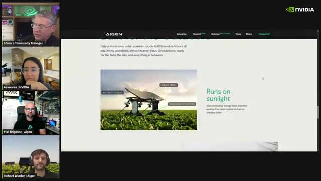
00:37:46지능은 에너지 예산 안에서 작동해야 한다.
야외 로봇은 태양광·배터리 제약 속에서 그늘, 야간, 날씨 변화까지 처리해야 한다.
농업 분포에 맞춘 사후학습
농업 영상은 범용 월드 모델의 사전학습 분포 바깥에 있었다.
Aigen의 실제 데이터와 시뮬레이션을 이용한 특화는
작물·잡초·토양을 픽셀 단위로 구분하는 결과를 개선하는 방향으로 사용됐다.
다만 영상의 나란한 비교는 자체 데모이며 독립 벤치마크로 해석해서는 안 된다.
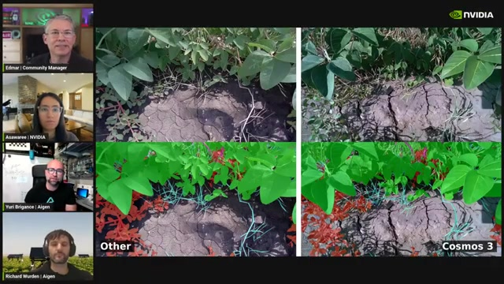
00:40:26
농업 도메인 밖의 범용 모델과 특화된 Cosmos 3 결과를 비교한 자체 데모.
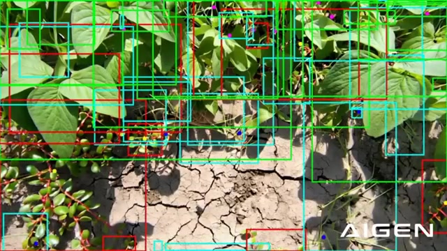
00:44:30
새 농장·작물·날씨에 맞춘 합성 장면과 픽셀·기하 정답을 빠르게 생성한다.
Case takeaway
합성 데이터는 실데이터를 대체하지 않는다.
실데이터가 현실의 분포를 제공하고, 시뮬레이션이 정확한 상태를 제공하며,
월드 모델이 외관과 시간적 다양성을 연결할 때 가장 강해진다.
06 · Evidence III
로봇 정책: 미래 비디오와 행동을 함께 배운다
세션 후반부는 인지와 데이터 생성에서 제어로 이동한다.
Cosmos3-Policy는 언어 명령과 다중 카메라 관측을 받아
미래 장면과 행동 청크를 동시에 생성하는 정책으로 조정된다.
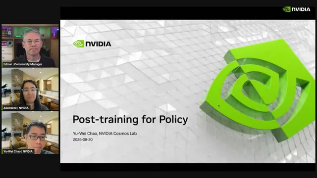
00:54:46
인지·합성 데이터 사례에서 로봇 행동 정책 사후학습으로 전환한다.
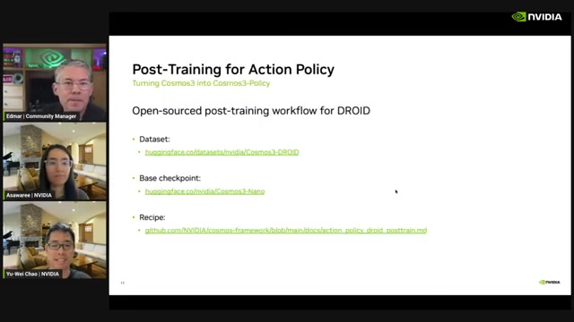
00:55:15
로봇 데이터, 기반 체크포인트, 레시피를 조합하는 공개 워크플로.
정책 구조: 명령을 이해하고 미래를 생성한다
Reasoner Transformer는 언어 지시를 처리한다.
Generator Transformer는 이어 붙인 여러 카메라 영상과 토큰을 받아
미래 비디오와 행동을 함께 생성한다.
행동 인코더·디코더가 생성기에 연결되고,
사후학습에서는 행동 모듈과 Cosmos 기반 generator가 갱신된다.
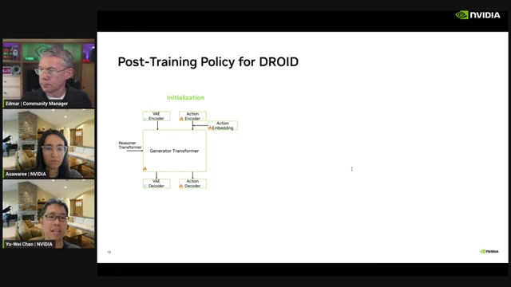
00:58:00
언어는 reasoner가 해석하고 generator는 현재 영상에서
미래 영상과 행동을 공동으로 예측한다.
발표에서 제시한 네 가지 학습 권장사항
큰 글로벌 배치: DROID 실험에서는 글로벌 배치 1K–8K 범위와 8K 사용 사례가 언급됐다.
긴 행동 예측 지평: 더 긴 행동 청크와 한 번에 32개 행동 예측이 유효했다고 설명한다.
이미지 증강: 카메라 조건과 환경 변화에 대한 강건성을 높인다.
비디오 생성 목적 유지: 생성 손실을 제거했을 때 정책 성능도 낮아졌다고 보고한다.
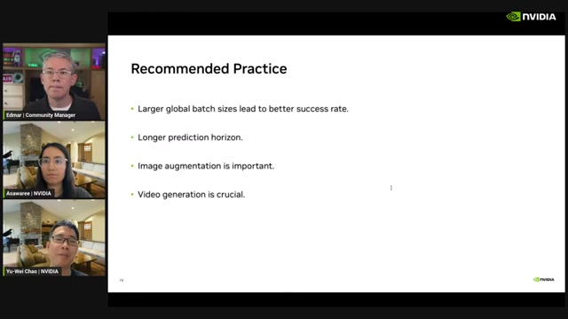
01:00:00
큰 배치, 긴 예측 지평, 증강과 생성 목적 유지가
Cosmos3-DROID 정책의 주요 학습 권장사항으로 제시된다.
미래 비디오 생성은 보기 좋은 보조 출력이 아니다. 로봇이 행동의 결과를 표현하도록 만드는 동역학 학습 신호다.
시뮬레이션에서 검증하고 엣지에 배포한다
실제 로봇이 없거나 반복 평가가 필요할 때는 Isaac Lab 기반 RoboLab에서 정책을 먼저 검증한다.
이어 Edge 모델을 Jetson Thor에 배포해 세 카메라 관측과 언어 지시로
물체를 순서대로 집어 통에 옮기는 작업을 수행한다.
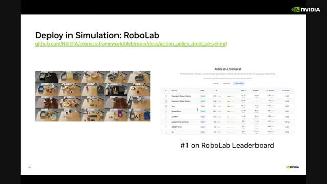
01:02:00
발표 시점의 리더보드 1위 표시는 자체 보고이며 현재 순위로 일반화할 수 없다.
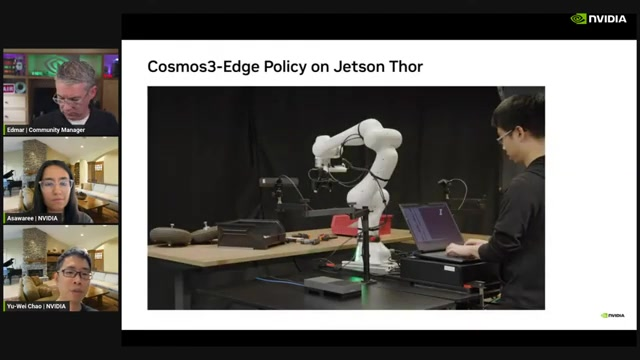
01:03:46
Cosmos3-Edge Policy를 Jetson Thor에서 실행해 부드러운 조작을 시연한다.
Case takeaway
인지와 제어를 연결하는 핵심은 미래 상태와 행동을 분리하지 않는 것이다.
생성 능력을 유지한 정책은 행동 결과를 내부적으로 표현하며,
이 동역학 표현이 제어 성능에 직접 기여할 가능성을 보여준다.
07 · Deployment
50단계 교사를 4단계 학생으로
도메인 전문 모델이 만들어졌다면 마지막 과제는 지연시간이다.
발표는 classifier-free guidance를 사용하는 50단계 생성 모델을
네 번의 네트워크 평가만 필요한 학생 모델로 증류하는 전략을 소개한다.
Teacher
10050단계 × CFG 2회 평가
→
Student
44단계 × 1회 평가
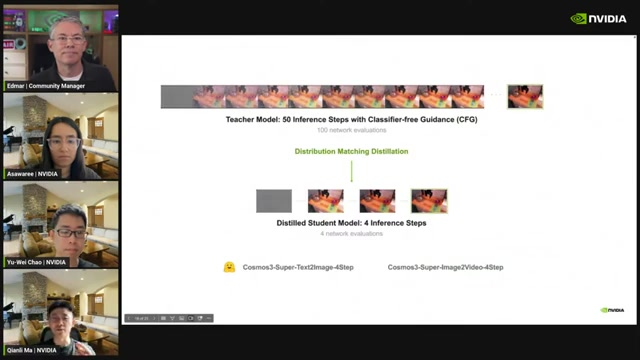
01:06:39
CFG 지식까지 학생에 증류해 100회 네트워크 평가를 4회로 줄이며,
계산 횟수 기준 이론상 25배 가속을 제시한다.
샘플을 복제하지 않고 분포를 맞춘다
동일 노이즈에서 교사와 학생의 출력을 일대일로 강제하는 궤적 증류는
학생 품질을 교사보다 낮출 수 있다.
분포 정합은 개별 샘플의 픽셀 대응을 포기하고,
학생이 생성하는 샘플 집단의 전체 분포가 교사의 분포와 일치하도록 학습한다.
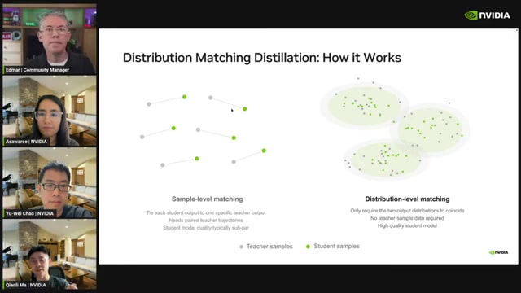
01:08:00
왼쪽은 같은 노이즈의 출력을 일대일로 묶고,
오른쪽은 개별 대응 없이 교사와 학생의 출력 분포를 맞춘다.
학생과 fake score 네트워크의 교대 학습
학생 단계에서는 학생 샘플에 노이즈를 더한 뒤
교사 score와 보조 fake score의 예측 차이를 줄이는 방향으로 학생을 갱신한다.
다음 단계에서는 학생을 고정하고, fake score 네트워크가 현재 학생 분포를 다시 추적하도록 맞춘다.
두 단계를 반복하면서 학생 분포를 교사 쪽으로 이동시킨다.
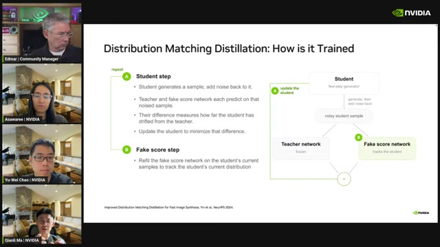
01:10:00
학생과 fake score 네트워크를 번갈아 갱신해,
보조 네트워크가 변화하는 학생의 현재 분포를 지속적으로 추적한다.
같은 픽셀이 아니라 같은 생성 능력
녹는 아이스크림 영상 비교에서 4단계 학생은 50단계 교사와 픽셀 수준으로 동일하지 않다.
그러나 녹는 움직임, 바람에 흔들리는 잎과 같은 핵심 동작을 보존한다.
발표자는 여러 품질과 프롬프트 준수 지표에서 저하가 거의 없었다고 보고하지만,
세부 독립 평가 자료는 이 영상에 포함되지 않았다.
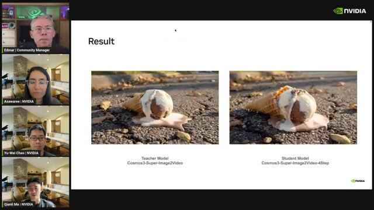
01:11:35
동일 프롬프트와 시드에서도 출력은 일치하지 않지만,
학생이 교사의 장면 역학과 생성 능력을 보존한다고 설명한다.
권장 순서: 특화한 뒤 증류한다
01 · BASECosmos 3 기반 모델
02 · SPECIALIZE도메인 데이터로 SFT
03 · VALIDATE전문 모델의 품질 확보
04 · DISTILL배포 목표에 맞게 증류
05 · DEPLOYFew-step 모델 배포
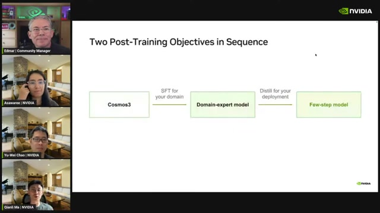
01:12:39전문화와 최적화를 분리한다.
도메인 정확도를 먼저 확보한 다음 배포 직전에 few-step 모델로 증류한다.
Deployment takeaway
특화와 가속을 한 번에 해결하려 하지 말라.
전문 모델의 품질을 먼저 고정하고 이후 지연시간을 줄여야
정확도 회귀와 시스템 성능 문제를 분리해 추적할 수 있다.
08 · Implications
물리 AI 팀이 가져갈 설계 원칙
사례의 숫자보다 중요한 것은 그 숫자를 만든 시스템의 순서다.
실제 프로젝트에 적용할 수 있는 함의를 여섯 가지로 정리했다.
01
운영 문장을 먼저 쓴다
‘침수’, ‘양보’, ‘잡초’ 같은 이름만으로는 부족하다.
언제 양성으로 판단하고 어떤 조치로 연결할지 자연어 기준과 단계형 레이블로 명시해야 한다.
02
희귀 사건은 2단계로 다룬다
저비용 모델은 재현율을, 무거운 VLM은 정밀도를 담당하게 하면
놓침과 계산 비용 사이의 충돌을 완화할 수 있다.
03
라벨링 불가능성을 데이터 부족으로 오해하지 않는다
사람이 볼 수 없는 정답은 더 많은 라벨러로 해결되지 않는다.
시뮬레이션의 완전한 상태와 기하 정답을 활용해야 한다.
04
실제·시뮬레이션·생성을 혼합한다
실제 데이터는 현실 분포, 시뮬레이션은 정확한 상태,
월드 모델은 장면 다양성과 시간 변화를 제공한다. 셋은 대체재가 아니라 보완재다.
05
정책에 미래 예측을 남겨둔다
비디오 생성 손실의 제거가 정책 성능 저하와 연결됐다는 발표 결과는
동역학 표현이 행동 예측의 핵심 학습 신호일 수 있음을 시사한다.
06
정확도와 지연시간을 순차적으로 최적화한다
도메인 SFT와 few-step 증류를 분리하면 품질 회귀의 원인을 좁히고,
배포 환경별로 다른 가속 모델을 관리하기 쉬워진다.
실행 전 체크리스트
모델의 출력이 실제 운영 조치와 직접 연결되는가?
양성·음성 비율과 경계 사례가 검증 세트에 현실적으로 반영됐는가?
같은 사실을 재표현한 질문에서도 답변이 일관적인가?
사람이 관측할 수 없는 정답을 시뮬레이션으로 보완해야 하는가?
정책이 행동뿐 아니라 행동 이후의 미래 상태를 표현하도록 학습되는가?
도메인 품질을 고정한 체크포인트와 배포용 증류 체크포인트가 분리돼 있는가?
발표 데모가 아니라 독립된 현장 데이터에서 성능을 재검증했는가?
09 · Source notes
출처, 해석 범위와 한계
원본 제목
Cosmos 3 Post-Training in Action With Aigen and Linker Vision | Cosmos Labs
자체 보고 수치:
Linker Vision의 플랫폼 규모와 침수 정확도, Aigen의 학습 규모,
RoboLab 순위, 분포 정합 증류의 품질 비교는 발표 자료에 제시된 주장이다.
영상 안에는 독립 검증 자료나 전체 벤치마크 조건이 포함되지 않았다.
자막 한계:
영어 자동 자막은 고유명사와 전문용어를 일부 잘못 인식한다.
슬라이드와 문맥으로 Aigen, DROID, SFT, CFG 등의 표현을 교정했지만,
정밀한 인용이나 구현 재현 전에는 원영상을 다시 확인하는 것이 안전하다.
화질 한계:
1080p·720p 적응형 스트림 접근이 제한돼 360p 통합 스트림으로 장면을 캡처했다.
큰 도식과 핵심 수치는 판독했지만 작은 URL, 각주와 표의 세부 셀은 근거로 사용하지 않았다.
공유용 요약
Cosmos 3의 현장 사례가 보여준 물리 AI의 공식:
① 운영 기준으로 문제를 다시 정의하고
② 실제·시뮬레이션·생성 데이터를 결합하며
③ 미래 비디오와 행동을 함께 학습하고
④ 도메인 특화가 끝난 뒤 4단계 모델로 증류한다.
모델보다 중요한 것은 데이터·평가·배포의 순서다.
#Cosmos3 #PhysicalAI #WorldModels #Robotics
The closing thought
현장은 모델에게 “무엇을 보았는가”보다 “그래서 무엇을 해야 하는가”를 묻는다
Cosmos 3의 사례는 월드 모델의 경쟁력이 생성 품질만으로 결정되지 않음을 보여준다.
실제 가치는 도메인의 정답을 정의하고, 관측의 빈틈을 시뮬레이션으로 채우며,
미래 예측을 행동으로 연결하고, 마지막에 배포 가능한 속도로 압축하는 전체 과정에서 나온다.